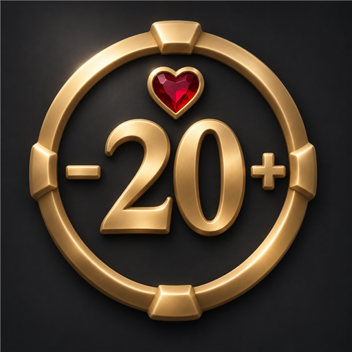

Tyklita CounterPočítadlo životů pro deskové a karetní hry
Life counter for board and card games
Tyklita Counter hlídá životy všech hráčů u stolu. Přidávej a uber životy jedním klepnutím, vrať omylem provedený tah a na konci partie uvidíš pořadí. Rozehraná partie se sama ukládá. Aplikace je v češtině a angličtině.
Tyklita Counter keeps track of every player's life total at the table. Add or remove life with one tap, undo a mistake and see the final standings at the end of the match. Your current match is saved automatically. Available in English and Czech.